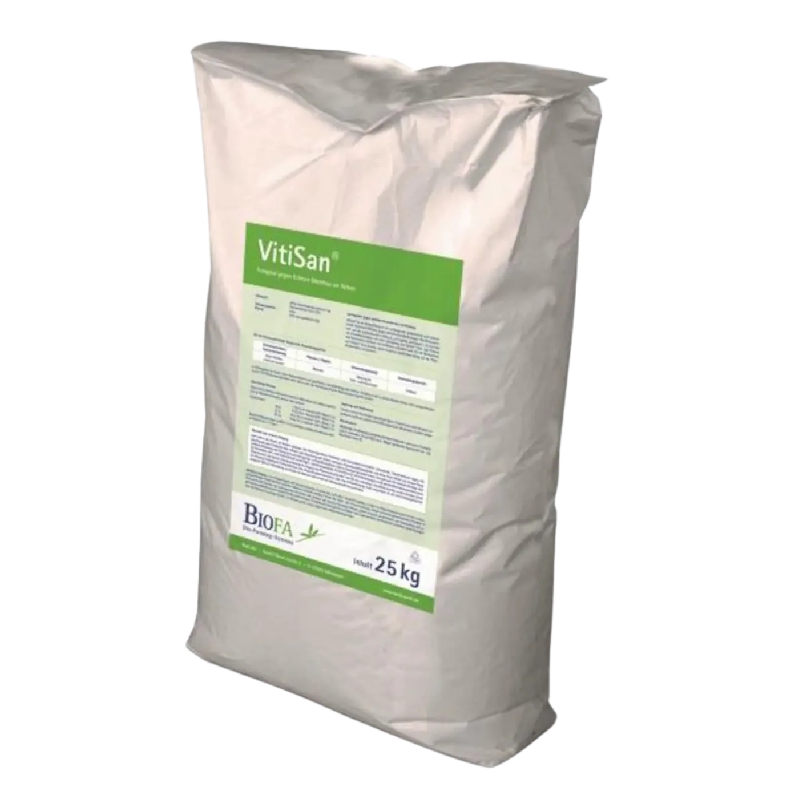
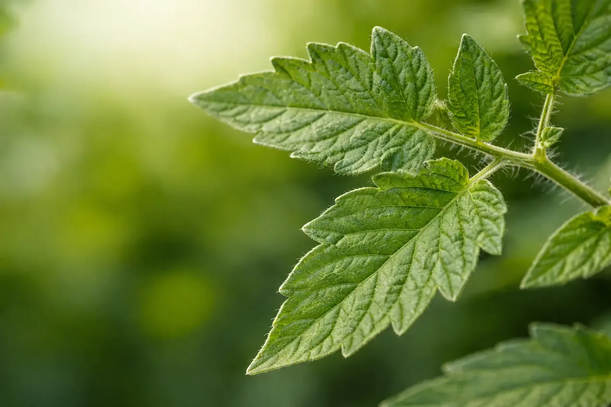

Modo de acción por contacto
Actúa en superficie, acompañando estrategias preventivas en momentos de mayor riesgo sanitario.
Fungicida / bactericida de contacto
Herramienta de contacto para programas preventivos de sanidad vegetal, compatible con manejo integrado y esquemas de producción sustentable.

Vitisan es una formulación de acción por contacto desarrollada para el manejo preventivo y la reducción de presión de enfermedades causadas por hongos y bacterias.
Su perfil permite integrarlo dentro de estrategias de rotación y programas de control biológico, ayudando a proteger la calidad de los cultivos y la producción.

Actúa en superficie, acompañando estrategias preventivas en momentos de mayor riesgo sanitario.
Se adapta a esquemas de manejo integrado y rotación de herramientas para mejorar la sustentabilidad.
Alternativa útil para cuidar sanidad y calidad en frutales, vid y hortalizas de alto valor.
Vitisan es un producto de Andermatt , grupo suizo líder en soluciones biológicas para la agricultura, con foco en calidad, innovación y sustentabilidad.
Nuestro equipo técnico-comercial te asesora sin cargo para integrarlo a tu programa de manejo.
También te puede interesar
Bionematicida biológico con cepa FZB42 para protección de raíces y manejo sustentable de nematodos.
Ver ficha técnica →Bioestimulante radicular con L-triptófano, L-metionina y Ecklonia maxima para potenciar arranque y vigor.
Ver ficha técnica →